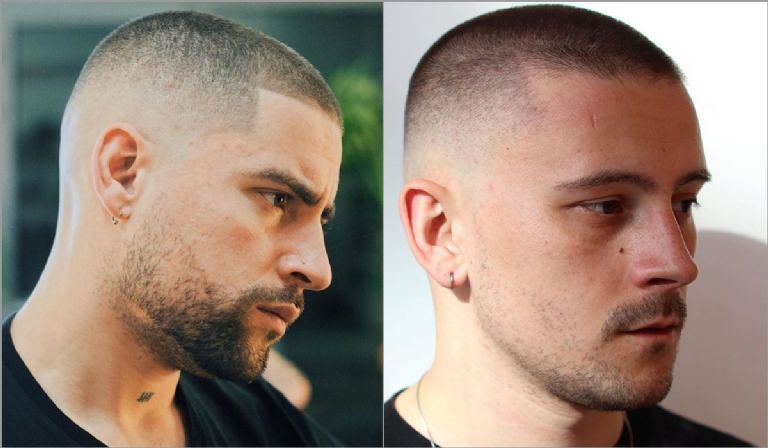
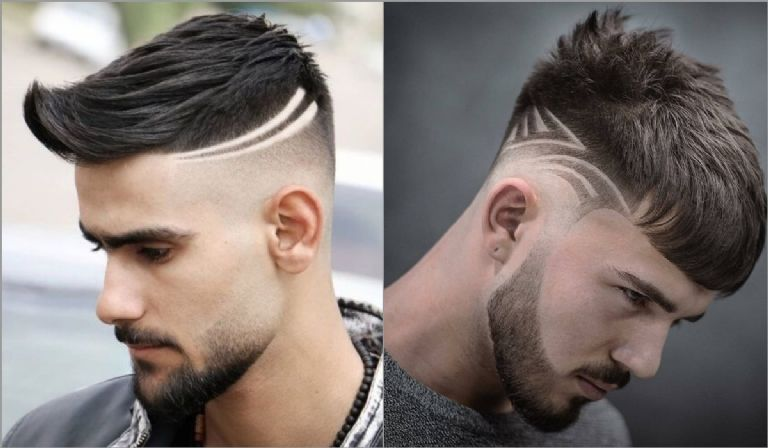

MEJORES ESTILOS 2022  1. Buzz cut Un corte clásico, que puede verse muy moderno. 2. Pompadour Este estilo fue popularizado por el famoso cantante Elvis Presley.  3. Líneas y figuras geométricas Esta moda vino de finales de los años 80, pero ha sufrido muchos cambios. Previous Next